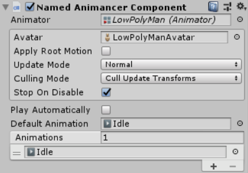
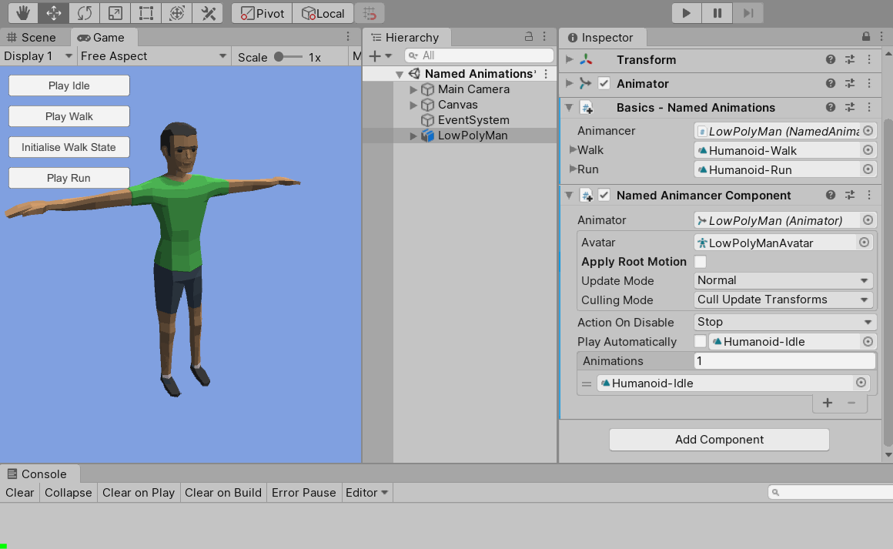
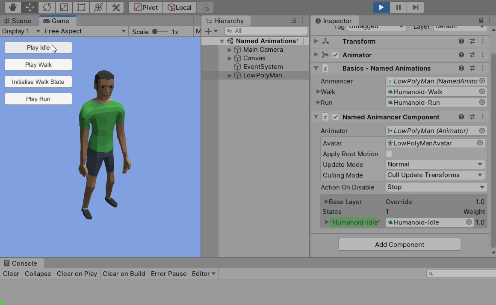
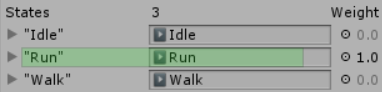

Difficulty: Beginner
Location: Assets/Plugins/Animancer/Examples/01 Basics/04 Named Animations
Namespace:
Animancer.Examples.Basics
The recommended way of using Animancer is by directly specifying the AnimationClip you want to play when telling it to play as the previous examples have demonstrated. However, Animancer does also support the ability to play animations by name so this example explains how you can do that. It also explains how you can actually use any type of key (including enums) to identify your animations instead of only their names.

Here is a quick overview of what is happening in that video:
- The
NamedAnimancerComponentis set up with the Humanoid-Idle animation in itsAnimationslist andPlay Automaticallydisabled. - After entering Play Mode, you can see in the Inspector that it creates a state for that animation but it is not playing and its
Weightis at 0. Since the character is using a Humanoid Rig, having no animations with any weight puts it into a "compressed" or "hunched over" pose according to the muscle limits defined in theAvatarconfiguration. - The "Idle" button calls
_Animancer.Play("Humanoid-Idle");to play the state with that name. - The "Walk" button tries to do the same thing with
"Humanoid-Walk"but fails because no state has yet been created for that animation so the example script just logs a message for it. - The "Initialise Walk State" button creates a state for the Humanoid-Walk animation.
- Now that the state exists, the "Walk" button can play it by name.
- The "Run" button passes the Humanoid-Run
AnimationClipinto thePlaymethod to show that names and direct references can both be used on the same object.
Using string names to identify animations is not the recommended way of using Animancer because it is unsafe. Any spelling mistake between the file name and the string you use will prevent it from working and any time you rename an animation you will need to manually go around and update the string everywhere it is used. This actually happened during the development of Animancer; once the sprite examples were implemented their animations began cluttering up the object picker window so all humanoid animations were renamed from just Idle to Humanoid-Idle. That was fine for everything else, but this example script needed to have all of its strings manually updated to the new convention.
The NamedAnimations script contains all the example code and looks like this (with the comments removed since we are about to explain how it works):
using Animancer;
using UnityEngine;
public sealed class NamedAnimations : MonoBehaviour
{
[SerializeField] private NamedAnimancerComponent _Animancer;
[SerializeField] private AnimationClip _Walk;
[SerializeField] private AnimationClip _Run;
public void PlayIdle()
{
_Animancer.Play("Humanoid-Idle");
}
public void PlayWalk()
{
var state = _Animancer.Play("Humanoid-Walk");
if (state == null)
{
Debug.Log("No state called 'Humanoid-Walk' exists yet." +
" Click 'Initialise Walk State' to create it then try again.", this);
}
}
public void InitialiseWalkState()
{
_Animancer.States.Create(_Walk);
Debug.Log("Created a state to play " + _Walk, this);
}
public void PlayRun()
{
_Animancer.Play(_Run);
}
}
Setup
We start with the Basic Scene Setup, but don't use a ground plane because the initial "compressed" pose centers the character around the origin so he would be halfway into the ground at that point and we would rather show the full pose.
The first thing the script needs is a reference to the AnimancerComponent we want it to control. In this example, we actually want to use a NamedAnimancerComponent which is defined as ... class NamedAnimancerComponent : AnimancerComponent, meaning that:
NamedAnimancerComponentInherits fromAnimancerComponent.- A
NamedAnimancerComponentis anAnimancerComponent. More specifically, it is a type ofAnimancerComponent, often called a "derived type". This meansAnimancerComponentis the "base type". - All members of
AnimancerComponentare Inherited byNamedAnimancerComponent. For example,AnimancerComponenthas aPlaymethod, thereforeNamedAnimancerComponenthas that same method. - The term "type" is often used interchangeably with "class", however they are not the same thing. Type includes classes, structs, interfaces, enums, and delegates.
- Similarly, the term "Member" includes Methods, Fields, and Properties.
Becuse a NamedAnimancerComponent is an AnimancerComponent, we could actually use either type for our field:
[SerializeField] private AnimancerComponent _Animancer;
[SerializeField] private NamedAnimancerComponent _Animancer;// We use this one.
- Using
AnimancerComponentwould allow us to assign anAnimancerComponentor any other script that inherits from it (includingNamedAnimancerComponent) to that field. - Using
NamedAnimancerComponentwould not allow us to assign anAnimancerComponent, only aNamedAnimancerComponent(or any other script that inherits from it). It would also allow us to access members ofNamedAnimancerComponentthat are not part of the base class such as theAnimationsarray which a baseAnimancerComponentdoes not have.
In this case, we do not need to use any of the members of NamedAnimancerComponent so either one would work fine, but we are relying on the fact that it will register animations by name so it is better to prevent a base AnimancerComponent from being assigned.
NamedAnimancerComponent has two main differences from AnimancerComponent:
- It Overrides the
GetKeymethod which is used to determine which key it will use for a given clip when you callPlay(AnimationClip)without specifying a key. Specifically, it overrides that method to return theclip.nameinstead of theclipitself like the base class. This means thatPlay(_Idle)andPlay("Humanoid-Idle")can both be used and will share the same state (assuming_Idleis a reference to the same animation named"Humanoid-Idle"). This also has an extremely small performance cost since strings are less efficient than direct references (do not be afraid to use it, but that is why this behaviour is not the default in the base class). - It also adds a
Play Automaticallytoggle and anAnimationsarray in the Inspector to allow you to set up a default animation and pre-register all the animations you want instead of needing methods likeInitialiseWalkStatewhich generally defeat the purpose of using strings in the first place.
AnimancerComponent |
NamedAnimancerComponent |
|---|---|
 |
 |
Anyone familiar with Unity's Legacy Animation component will recognise the additions of the NamedAnimancerComponent as being quite similar. See Animancer Component Types for more information about the different types.
Startup
The NamedAnimancerComponent is set up with the Humanoid-Idle animation in its Animations list and Play Automatically disabled. This means that when enter Play Mode you can see in the Inspector that it creates a state for that animation but it is not playing and its Weight is at 0. Since the character is using a Humanoid Rig, having no animations with any weight puts it into a "compressed" or "hunched over" pose according to the muscle limits defined in the Avatar configuration.

Idle
public void PlayIdle()
{
_Animancer.Play("Humanoid-Idle");
}
This method and all the others in this example are set up to be called by UI Buttons.
Since the Humanoid-Idle animation already has a state created for it (because it is in the Animations list), we are able to immediately play it using its name without our example script needing an actual reference to that AnimationClip.

Walk
public void PlayWalk()
{
var state = _Animancer.Play("Humanoid-Walk");
if (state == null)
{
Debug.Log("No state called 'Humanoid-Walk' exists yet." +
" Click 'Initialise Walk State' to create it then try again.", this);
}
}
The Humanoid-Walk animation is not in the Animations list, meaning that if we try to play it with _Animancer.Play("Humanoid-Walk"); it can't know which AnimationClip we want to play so it does nothing and returns null. For the sake of this example we check when that happens and log a message.
To actually get it to work, the script needs a reference to the animation (AnimationClip _Walk) so it can create a state for it:
public void InitialiseWalkState()
{
_Animancer.States.Create(_Walk);
Debug.Log("Created a state to play " + _Walk, this);
}
We could specify a custom key when calling CreateState, but since we aren't it will determine the key using the GetKey method (which uses the animation's name because it's a NamedAnimancerComponent).
Creating the state doesn't immediately do anything to the character, but once it is created we can play it by name just like we did with the Humanoid-Idle.

Run
public void PlayRun()
{
_Animancer.Play(_Run);
}
The Humanoid-Run animation is not in the Animations list either, but we have a reference to it (AnimationClip _Run) so we can just call _Animancer.Play(_Run); to show that we can still use direct references in a NamedAnimancerComponent where we have been using string names so far.

You can see in the Inspector that despite being created in different ways, all of the states have been registered using their names as keys where they would normally just show their AnimationClip because it is being used as its own key.
| Name Keys | Regular AnimationClip Keys |
|---|---|
|  |  |
The States documentation explains keys in more detail.